STRATEGY · PLATFORM
STRATEGY · PLATFORMInvestment strategy
BIRD 2026–2035
A decade-scale investment and development roadmap for the Bangsamoro context.

Selected indicators from the current professional knowledge base.
Search, filter, open the visuals, and inspect the work by domain.
STRATEGY · PLATFORMA decade-scale investment and development roadmap for the Bangsamoro context.
 RESILIENCE · DIGITAL
RESILIENCE · DIGITALDigital systems innovation for disaster risk, resilience, vulnerability, exposure and decision support.
 STRATEGY · DIGITAL
STRATEGY · DIGITALA digital planning architecture connecting diagnosis, strategy design, execution and learning.
 CLIMATE · RESILIENCE
CLIMATE · RESILIENCEClimate-smart, community-based resilience work documented in the professional portfolio.
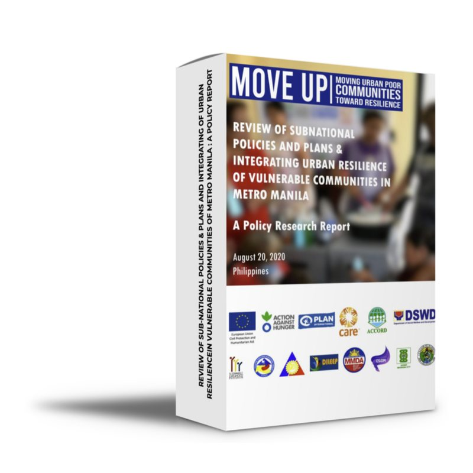
INSTITUTIONALNational strategic planning work connected with WorldSkills Philippines and TESDA.
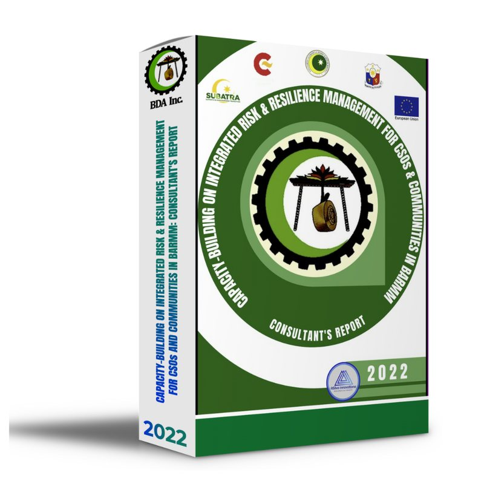
HUMANITARIANRisk and resilience practice across food security, livelihoods, WASH and humanitarian systems.
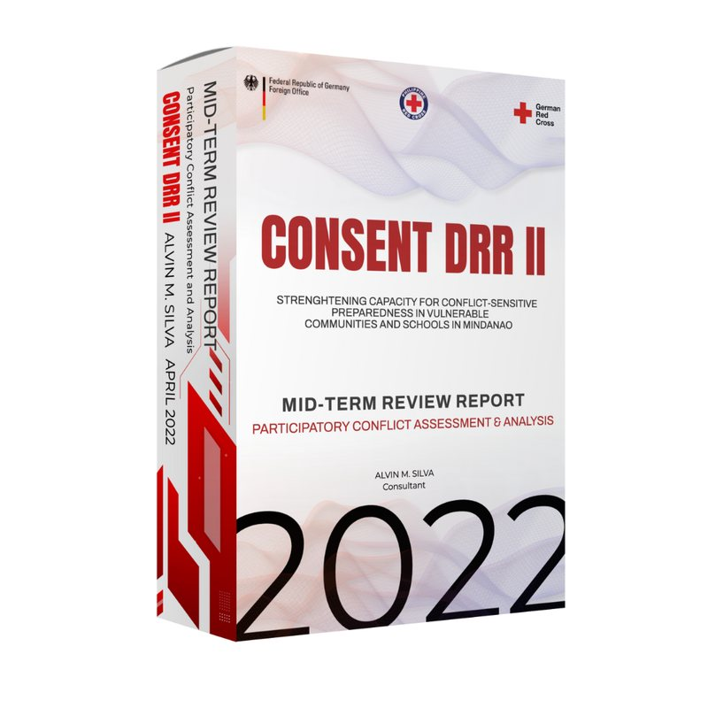
DRR · REVIEWMid-term review work connecting disaster risk reduction with conflict-sensitive practice in Mindanao.
 LGU · PLANNING
LGU · PLANNINGIntegrating climate and disaster risk into comprehensive development planning for an LGU.
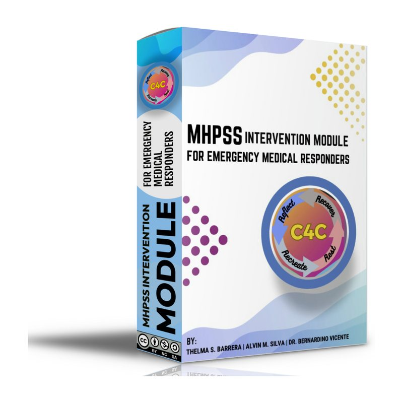
HEALTH · HUMANITARIANCapacity-building and intervention design for emergency mental health and psychosocial support.
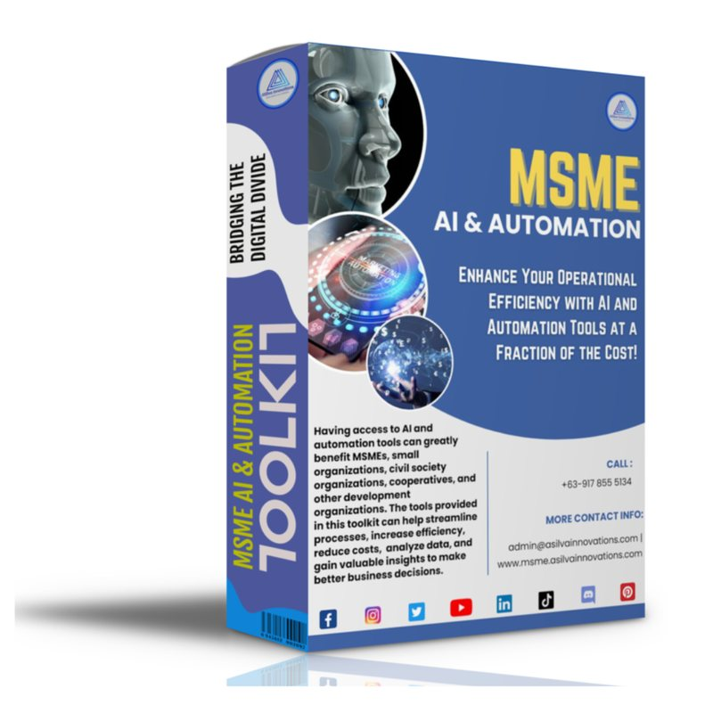
MSME · AIApplied systems innovation for small and medium enterprises through digital and AI-enabled process improvement.
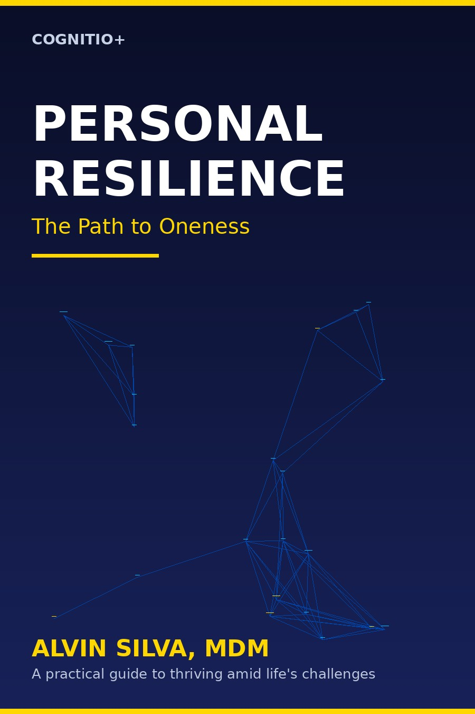
PUBLICATIONA published work extending resilience thinking into personal development and reflective practice.
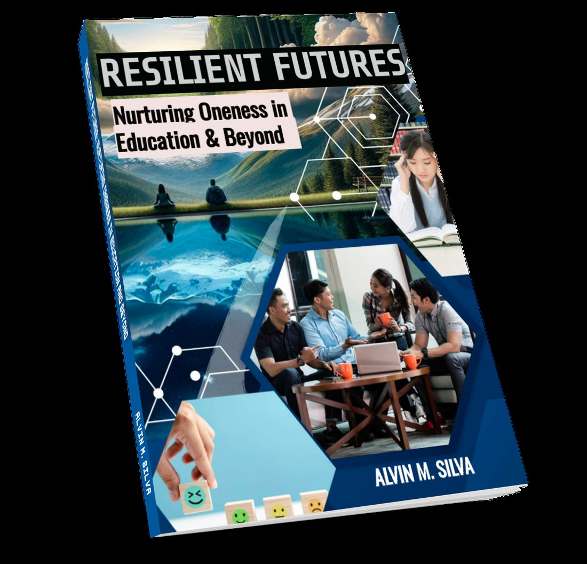
PUBLICATIONThought leadership connecting resilience, education, systems and future-oriented practice.
Visuals are not decoration here: they expose the process, feedback loops and leverage logic behind systems practice.
The visual method aligns with the systems-oriented assets in the portfolio.
Clarify the challenge, decision and system boundary.
Surface actors, patterns, evidence and competing mental models.
Trace feedback loops, vulnerabilities and leverage points.
Co-create options, scenarios, governance and delivery pathways.
Translate strategy into owners, milestones, resources and indicators.
Measure, adapt, document and strengthen the system.
Selected original visual assets from the portfolio's systems innovation and strategy work.


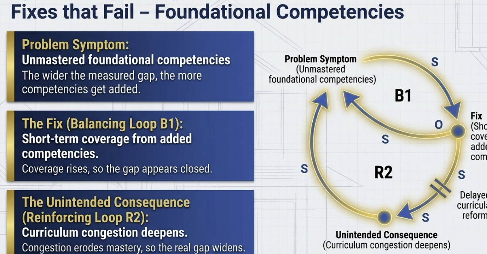


Selected books, manuals and reports represented by the repository's existing cover assets.
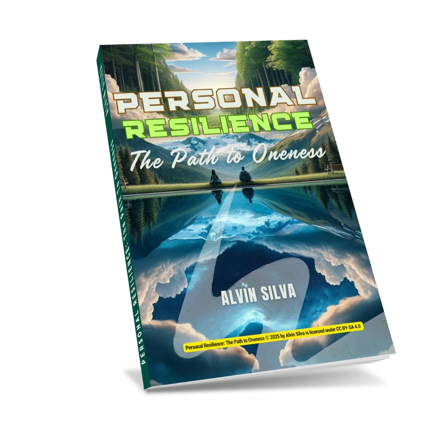
2025 · Book
2024 · Book
2023 · Book
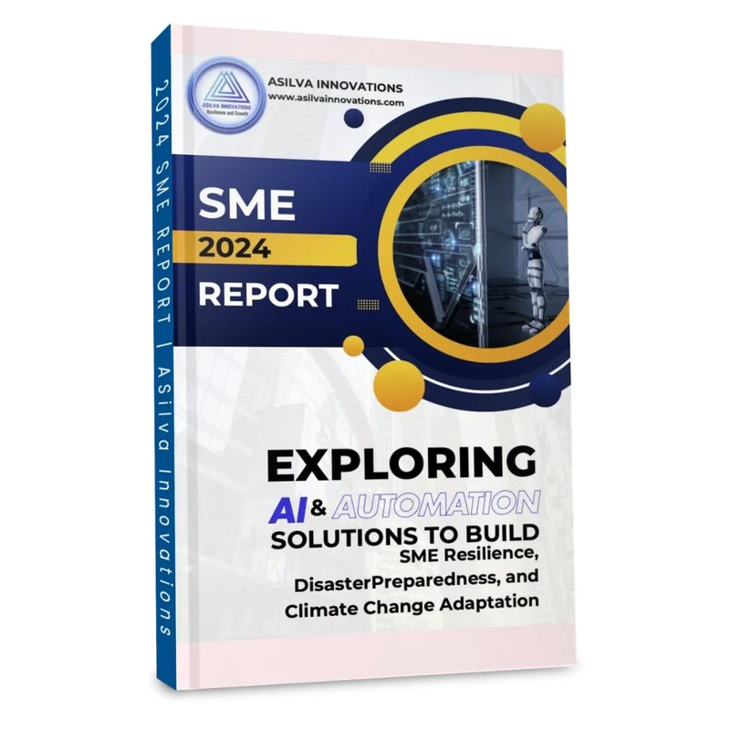
2024 · Report
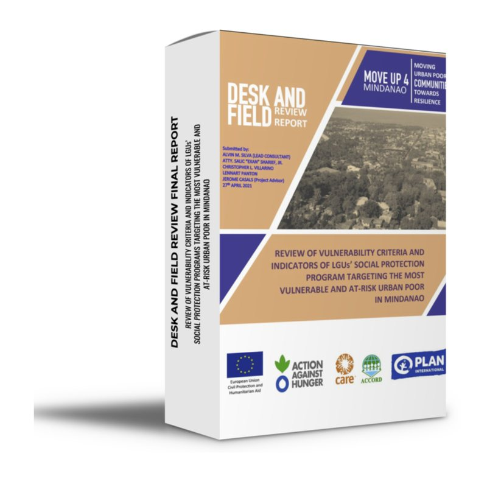
2021 · Research
Selected professional work
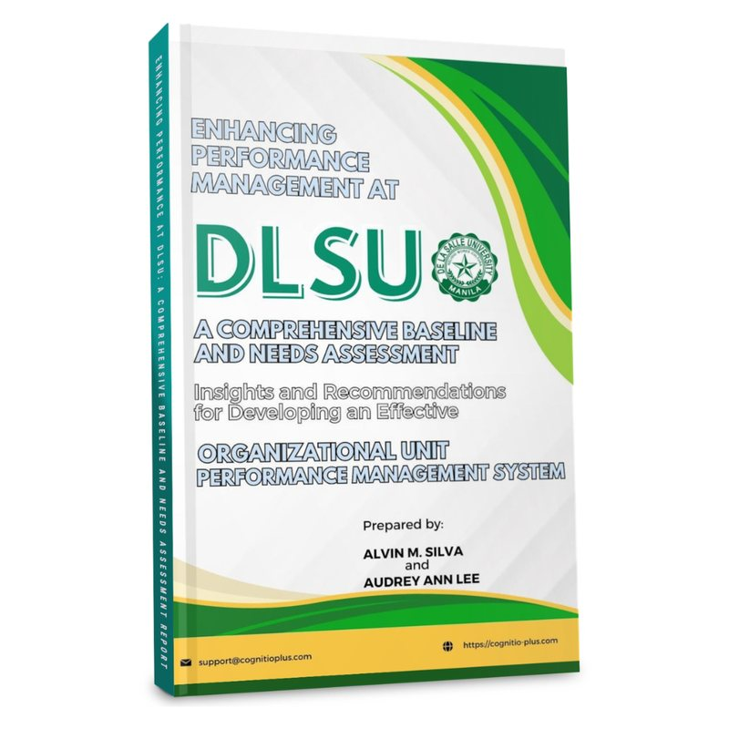
2024 · Organizational development
Digital innovation